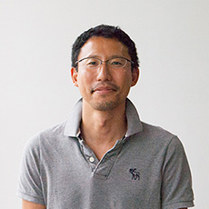
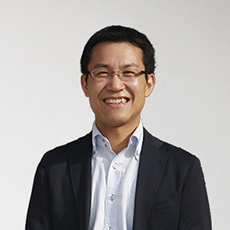
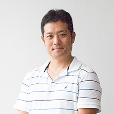
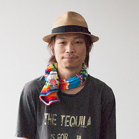
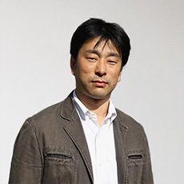
平井 誠人
フランジアホールディングス 代表取締役社長
2000年上智大学大学院理工学研究科博士前期課程修了。 三菱商事、インテリジェンスを経て、I&Gパートナーズを設立取締役就任。 その後日本・中国にて、クリーンテック系企業へ投資・ソーシャルゲームのプロデュースに従事した後、2012年9月より現職。
服部 裕輔
フランジア・ジャパン 代表取締役社長
名古屋大学経済学部卒業後、株式会社インテリジェンス入社、人材紹介事業の立ち上げ、BPR、新規事業開発、国内外のM&A等、様々な課題解決を経験。その後、経営戦略本部長、海外事業担当の執行役員 兼 中国現地法人の代表として、海外での事業推進を担当。2013年3月より現職。
藤本 一成
フランジア・フィリピン 代表取締役社長
2000年上智大学経済学部経営学科卒。大手損保、外資系ソフトウェアベンダー、IT広告代理店を経て、中古車輸出業の（株）ランクスを設立、代表に就任（現任）。2010年6月にベトナムハノイに移住。2010年11月〜2012年3月 ライフタイムテクノロジーズ社 社長。2015年9月より現職。グローバル化の流れはもっと加速する。今、日本人がするべきことはアジアで成功し世界を狙うことだと信じている。また、海外での日本人による成功事例が増え身近になることで、日本人の優秀な若者がアジアで成功を目指すようになれば、すでに制度疲弊により機能していない日本の既存システムが改革されていくのではないかと考えている。
小林 泰平
フランジア・ベトナム 代表取締役社長
早稲田実業高校中退。飲食店勤務、ネットワークサポート業務、などを経てソフトウェア開発会社に就職。
ソーシャルアプリ開発の現場にてオフショア開発に触れ、海外との共同開発に興味を抱く。ベトナムでエリートと呼ばれる若者を育成し、一流の仕事を出来る様にする事がアジアの未来を切り開くきっかけになると信じFramgiaに入社。「わっしょい、アジア！」を合言葉に日々邁進中。
高倉 健一
フランジア・ジャパン 取締役
通信系ベンチャーを経て、ディップ株式会社に入社。「はたらこねっと」、「バイトルドットコム」等の編集長を歴任した後、ユーザー集客からサイト企画、サイト運営に至るメディアプロデュース全体の責任者として複数のメディア事業を牽引。2013年9月より現職。
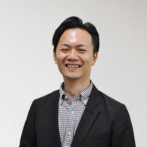
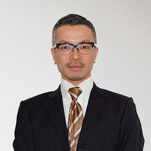
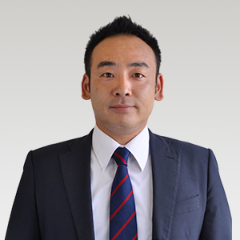
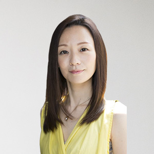
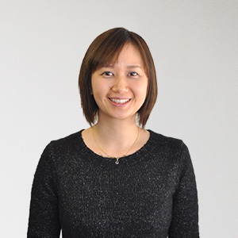
外山 隆浩
フランジア・ジャパン CMO
株式会社セプテーニ入社、SEO部署の立ち上げから一貫してSEO事業に従事。人材業界・不動産業界・旅行業界など大型サイトを中心にコンサルテーションを行いTOPコンサルタントとしてSEO部署を課に昇格させ、課長としてチームを牽引。2013年7月より現職。
大西 健資
フランジア・ジャパン エグゼクティブマネージャー
中央大学法学部卒業後、大手損害保険会社を経て株式会社インテリジェンス入社。人材紹介事業においてゼネラルマネジャーとして組織運営にあたり、同社子会社の株式会社クリーデンスでは執行役員として経営全般に従事。
2014年12月より現職。
住山 省太
フランジア・ジャパン シニアマネージャー
同志社大学経済学部卒業後、国内大手メーカーを経て株式会社インテリジェンス入社。人材紹介事業に従事した後、国内メーカー、外資メーカーにおいて人事、広告代理店にて経営企画、営業企画に従事。
2015年9月より現職。
中山 敦子
フランジア・ジャパン BPRコンサルタント兼カウンセラー
大手人材サービス会社に入社後、営業企画、システム企画を経て、社内業務システム構築プロジェクトの開発チームに所属。法人顧客データベースのシステム企画、スケジュール管理、コスト管理を担当。退職後は、大手結婚情報サービス会社おいて、鹿児島支社リーダーとして売り上げの管理やメンバー育成など支社運営を担う。
結婚カウンセラーのほか産業カウンセラー、心理カウンセラーとしてカウンセリングの臨床時間は1000時間以上を超える。2013年4月より現職。
西村 裕美
フランジア・ジャパン ライター兼SEOコンサルタント
ノンフィクションを中心に扱う出版社にて、編集・ライティング・デザイン・DTPなどの業務に従事。ライターとして、青森県最大の地方紙『東奥日報』へのコラム寄稿、単著出版のほか、大学教授、企業から一般まで幅広い層へのインタビュー記事を中心に執筆を行う。
2015年1月より現職。
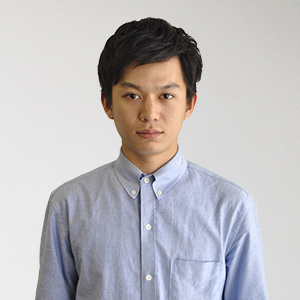
楢崎 裕斗
フランジア・ジャパン SEOコンサルタント
同志社大学政策学部卒。Webコンサルティング会社に入社後、医療系のWebマーケティング全般を担当。大学在学中より、複数のWebメディア運営に携わるなど幅広い分野で活躍。
2015年4月より現職。
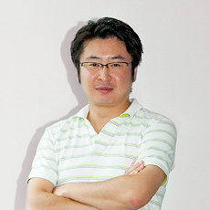
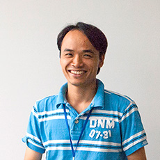
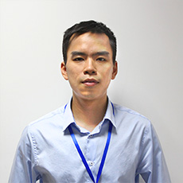
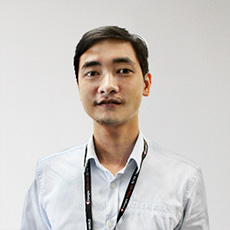
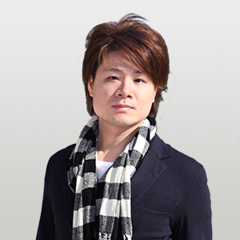
本間 紀史
フランジア・ジャパン CTO
2002年上智大学大学院理工学研究科機械工学専攻修了。情報処理技術者(ST、SA、PM、NW、DB、SC)。
現在、家族とともにハノイに暮らし、ベトナムの才能あふれる若手エンジニアに日本品質のシステム・サービス開発ができるよう、人材育成に力を注ぐ。2012年4月より現職。
Vu Xuan Dung
フランジア・ベトナム システム開発部1部 マネージャー
2002年文部科学省奨学金で日本へ留学。2008年東北大学工学部情報工学科卒。日本富士通、FXシステム開発会社を経て、CEO藤本の懇願を受けFramgiaに入社。 Facebook、Twitterのような次の大きなサービスをハノイから生み出せるような若手エンジニアと一緒に仕事をするのが目標。 そのためにまず、日本人がこだわる品質をよく理解し、日本と同等以上の品質のソフトウェアを開発できるエンジニア集団を育成する。
Nguyen Xuan Son
フランジア・ベトナム システム開発部2部 マネージャー
立命館大学MOT（技術経営）大学院博士前期課程修了。楽天株式会社に就職し、本社とオフショア開発拠点のブリッジ役と、グローバルグループのスクラムマスターを兼任する。2014年4月にシステム開発部2部のマネージャーとしてFramgiaに入社。
Nguyen Ngoc Tuan
フランジア・ベトナム システム開発部3部 マネージャー
2006年ハノイ工科大学卒。Fsoft社にてプロジェクトマネージャーとして勤務し、2013年にFramgiaへ入社。
システム開発部3部のマネージャーを務める。
石田 浩章
フランジア・ベトナム チーフエンジニア
株式会社オーシャナイズ入社、自社メディア「タダコピ」の基幹システムの保守運用、及び新規WEB事業の立ち上げを牽引。学生向けSNSの立ち上げや同社Webコンテンツの拡充後、システム開発部部長を担当。また同社初のスマートフォンアプリを企画開発するなど、新しい自社メディアの形成に貢献。
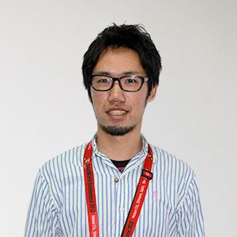
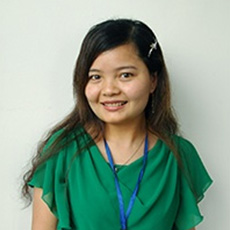
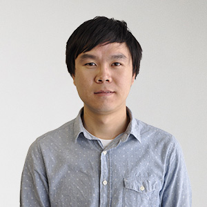
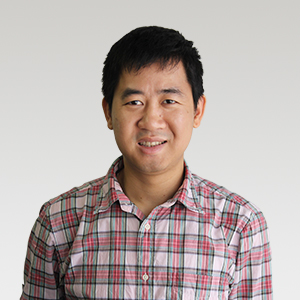
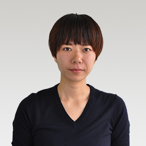
福田 紘也
フランジア・ベトナム エンジニア
2014年立命館大学情報理工学部卒業後、同年3月に入社。
2013年にインターンシップとしてフランジアに参加した際に傑出した能力を見せ、エンジニアとしてスカウトされる。ITを駆使して世界をより楽しくするため、才能溢れるエンジニアたちと切磋琢磨している。
Tran Thi Ngoc Bich
フランジア・ベトナム QAリーダー
2005年ハノイ大学日本語学部、2006年FPT Aptech（IT専門学校）卒。
2006年4月～2012年1月までFPTソフトウエアにてテストリーダとして勤務し、Framgiaへ入社。
QAチームリーダーを勤める。確かな知識と経験、持ち前の高い「気付き」の能力を駆使し、Framgiaの高いソフトウェア品質を担保している。 そのためには一切の妥協を許さない。
Le Dinh Tung
フランジア・ジャパン エンジニア
2007年10月日本に留学。福井大学工学部卒業後、株式会社システムエグゼ入社。保険本部に配属され、保険に関わる各WEBアプリケーション開発のブリッジエンジニアを担当。 IT業界で日本とベトナムの架け橋になり、両国の経済発展に貢献。2015年03月より現職。
Nguyen Xuan Huy
フランジア・ジャパン エンジニア
ハノイ工科大学卒業後、ICTサービス会社へ入社しエンジニアとして従事。現在は、業務と並行して北陸先端科学技術大学院大学博士後期課程において、SNSやECサイトの情報推薦システムの研究も行っている。
2015年7月より現職。
亀田 みさ緒
フランジア・ジャパン エンジニア
大学卒業後、ソフトウェア会社へ入社。仕事をしていく中で、Web業界を目指そうという希望が出てきたため退職。専門学校に通いながら、Webサービスを提供する会社にアルバイトとして入社し音楽メディアサイト「OKMusic」の運営に従事する。その他にHTML/CSSコーディングも担当しフロントエンジニアとして幅広く活躍。2015年10月より現職。
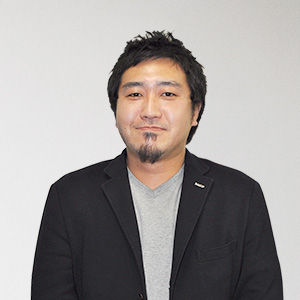
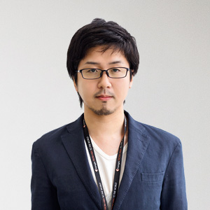
今村 直人
フランジア・ジャパン クリエイティブディレクター
株式会社セプテーニ入社、クリエイティブ部デザイナー兼ディレクターとして従事。主に金融業界・エンタメ業界をメインに、広告領域全般を担当。2012年下半期ベストクリエイター賞受賞。2014年4月より現職。
深川 祐史
フランジア・ベトナム デザイナー
都内制作会社にてWebサイトからDTP、デジタルサイネージまで様々なフィールドに渡る制作に携わる。
2014年3月Framgiaへ入社。デザインチームリーダとして、若く優秀なデザイナーをアジアから世界に羽ばたかせられるよう牽引する。